A visual reference board for the Fernwae conversation visualization project. Every creator, tool, lab, and concept from the research — visible at a glance.
★
Design Direction — The Fernwae Aesthetic
This is the target design language for Fernwae. Every visualization on this board will ultimately be filtered through this aesthetic: Wes Anderson meets Monocle Magazine meets Scientific Atlas. Warm, precise, information-dense, and beautiful. The goal is to apply this style to conversation mapping, dialogue visualization, and subtext interfaces.
The North Star: Eclipse diagrams on jet-black backgrounds with white engraved lines. Constellation maps as dot-and-line networks on aged cream paper. Comet trajectory charts with annotated arcs and labeled dates. Everything is precise, annotated, and structured — scientific instruments made visual. That's the register. Now apply it to conversations.
00
Your Vision
The interface concepts you've already developed — the Dialogue Cartographer, Emotional Grammar Map, Dynamic Argument Flow, and Cognitive Resonance Waveform.
Fernwae Concept
Interface: Dialogue Mapping Unit 01–04
Four interface concepts: The Dialogue Cartographer (spoken text with cognitive subtext map), Emotional Grammar Map (conversation resonance), Dynamic Argument Flow (switchable argument/subtext layers with honesty slider), and Cognitive Resonance Waveform (turbulent cognitive resonance for subtext mismatch).
Creators who transform language, text, and conversation into visual experiences. The most directly relevant precedents for your work.
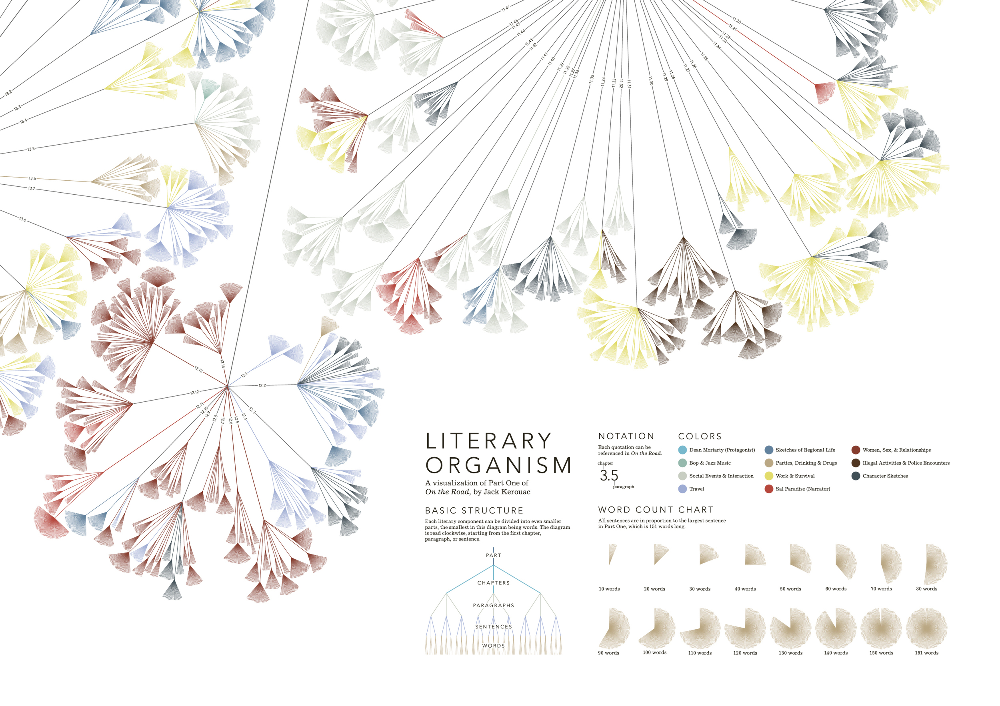
Language Visualization
Stefanie Posavec — Writing Without Words ⭐
One of the most directly relevant precedents for the Fernwae project. Visualized Jack Kerouac's prose as organic, tree-like branching structures. Maps sentence length, rhythm, and word choice into color and form. Treats text as a dataset and finds its hidden geometry. The visual language here — organic, branching, color-coded — is exactly the kind of approach that could be applied to conversation transcripts.
Each sentence becomes a visual path, with branches and colors encoding parts of speech, themes, and rhythm. The closest existing precedent for turning language itself into a visual object.
Mapped every single line of dialogue in Hamilton by character, theme, and conversation flow. A landmark in dialogue visualization: interactive, beautiful, and built on real conversation data.
Hand-drawn sketches transformed into real-time interactive visual interfaces using TouchDesigner. Cockpit aesthetic with glowing elements on dark backgrounds. Retro-futurist sensibility. The aesthetic inspiration for your project.
Design concept for visualizing online forum conversations. Represents entire threads visually with each post shrunken to emphasize shape and structure. A "scroller" view lets users grasp conversation flow, identify key participants, and spot heated debates or off-topic diversions at a glance.
Creators who share the Wes Anderson / Monocle Magazine aesthetic: warm, precise, information-dense, and beautiful.
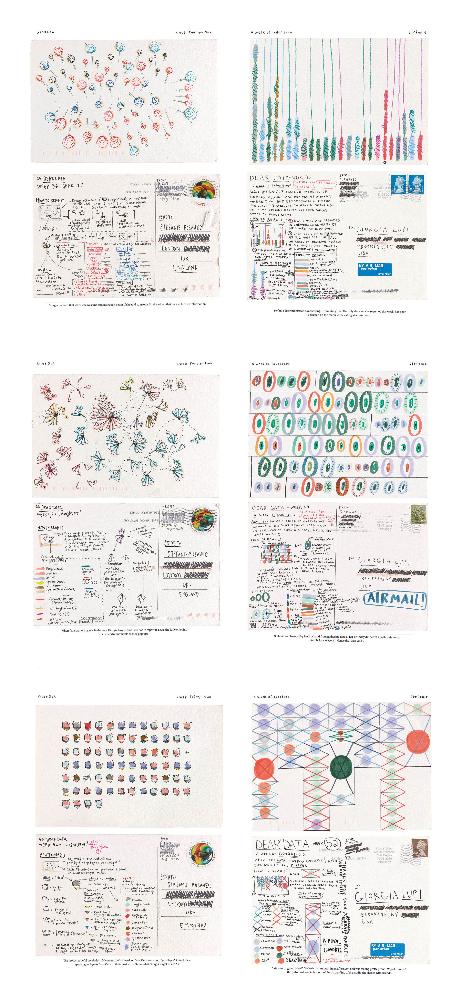
Data Humanism
Giorgia Lupi — Dear Data
A year-long project of hand-drawn data postcards. Coined "Data Humanism." Proves data visualization can be warm, personal, and hand-crafted. The closest aesthetic precedent for your Wes Anderson tone.
Award-winning creative data visualizations. Published "Chart Art" (2025). Her radial and organic forms demonstrate that complex data can be rendered with extraordinary beauty.
Personal data as editorial design. Pioneered the "quantified self" as a design object. The gold standard for data-as-editorial-design. The Monocle Magazine of data visualization.
Independent data viz designer. Co-host of Data Stories podcast (170+ episodes). Explicitly bridges the gap between analytical rigor and visual beauty — the balance your project requires.
Sophisticated, interactive data storytelling on the web. Demonstrates how complex analysis can be made accessible and engaging through interactive visual narrative.
Creators building the conceptual and technical infrastructure for making thinking visible through interactive media.
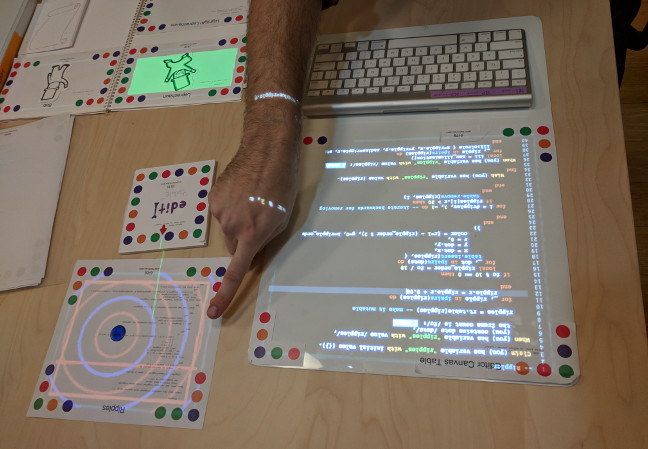
Interactive Media
Bret Victor — Dynamicland
Pioneer of explorable explanations and interactive, dynamic media for understanding complex systems. The intellectual godfather of "seeing the whole system." His ideas about making thinking visible are foundational.
Interactive simulations of trust, cooperation, and social dynamics. The closest thing to "playable conversation theory." Also created Nutshell, a tool for expandable explanations.
The research institutions actively building the science and technology of conversation visualization.
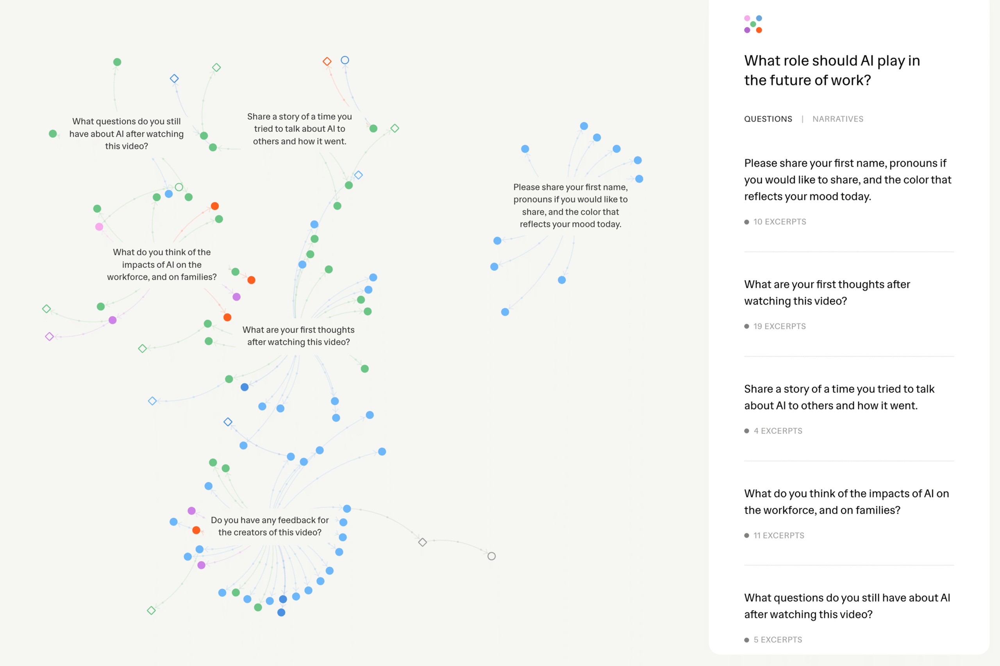
Research Lab
MIT Center for Constructive Communication ⭐
Led by Deb Roy. The single most relevant research lab for your project. Their Anthology project transforms conversations into interactive maps. Conversation Flowers visualizes conversation health dynamics. Their Visualizing Dialogue project is a key reference for Fernwae — it explored extracting and translating meaning from conversations using "theme sort" visualization, directly applicable to building pausing maps and concept maps from dialogue.
University of Michigan. LLM-powered real-time dialogue mapping during meetings. AI generates summary nodes from speech; users arrange them into maps. Users said it "aligned better with their mental models of conversations."
Real-time emotion detection from voice prosody. Measures nuanced vocal modulations across dozens of emotional dimensions. The technology for emotional subtext detection exists — the beautiful visual interface does not.
Real tools you can examine today. Each represents a piece of the puzzle you are assembling.
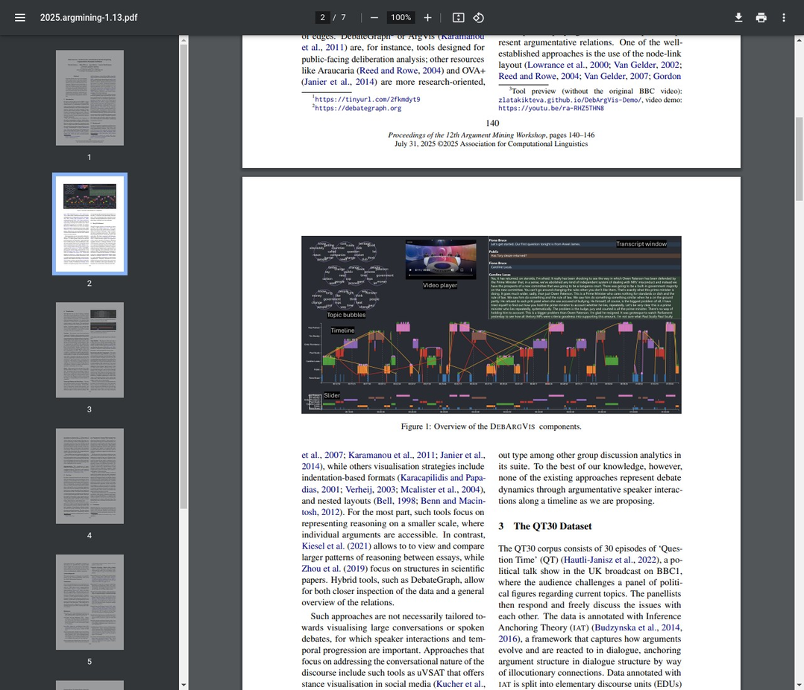
Argument Visualization
DebArgVis — Debate Argument Visualization
Interactive D3.js tool for visualizing argumentative dynamics in debate. Speaker timeline, argument relations, word clouds per speaker, transcript linked to visual nodes. Open source.
Meeting analytics tracking talk time, speaking pace, camera presence, sentiment, and engagement. Makes power dynamics visible through concrete metrics and visualizations.
Artists and installations that transform voice, speech, and conversation into physical and visual form.
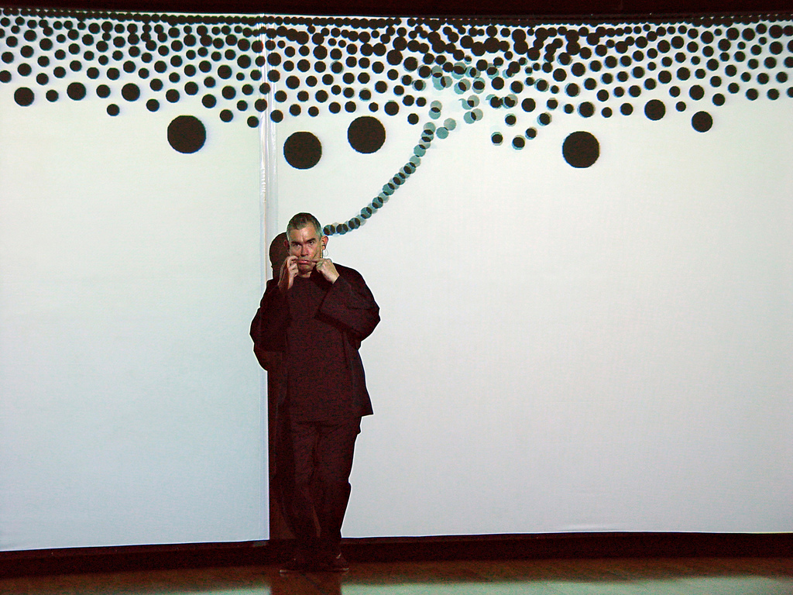
Voice Visualization
Golan Levin — Messa di Voce
A performance where voice is transformed into dynamic visual form in real-time augmented reality. The pioneer of making voice visible — proving speech can become a rich, expressive visual medium.
Art installation culling text from chat rooms in real-time, displayed on a curved grid of small screens with voice synthesis. Conversation as ambient, spatial experience.
Participatory environment where visitors speak into an intercom; their voice is recorded, visualized as a waveform on an LED display, and added to a growing wall of previous recordings. Speech becomes light, pattern, and collective memory. Also created Voice Tunnel (NYC), Speaking Willow (Planet Word Museum), and Open Air — all exploring voice as sculptural, visual material at architectural scale.
Signals extractable directly from audio and speech patterns. Each one has existing research or tools — but none have been unified into a single beautiful interface. Yet.
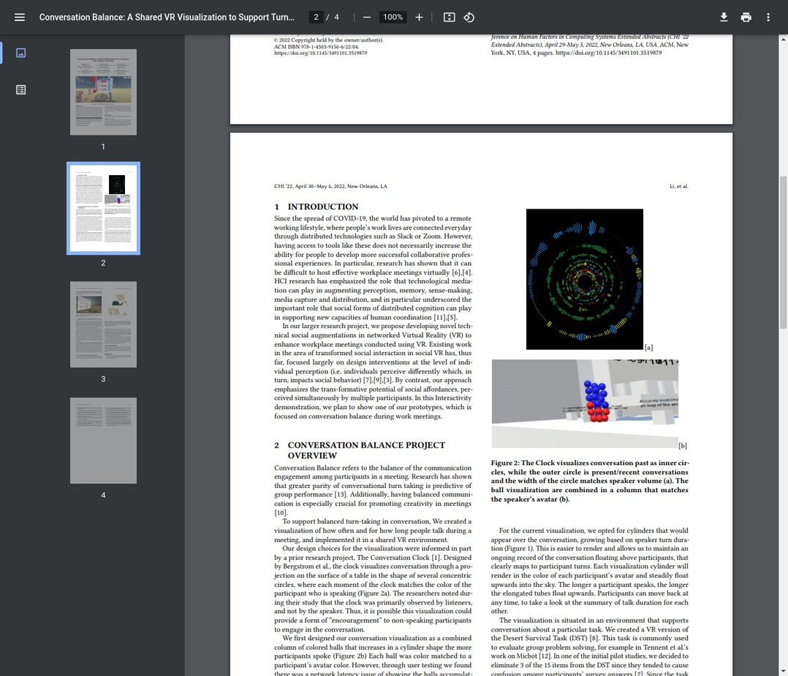
Signal 01 — Turn-Taking Balance
Conversation Clock — UC Santa Cruz
Visualizes conversation as concentric circles. Width of segments = speaker volume, color = speaker identity. Inner circles show conversation history, outer circle shows present. At-a-glance understanding of who spoke, for how long, and how loudly.
An evolving, interactive visual overview of large-scale ongoing conversations. Moves beyond a simple list of updates to show how discussion evolves over time, summarizing main facets and providing exploratory interactivity.
Plots phase-locking value between speech envelope and brain signals over time. 3D brain visualizations highlight cortical regions where synchronization occurs. Speech rhythm alignment correlates with trust.
Plots pitch contours of two speakers on a graph. Degree of similarity or divergence over time provides a visual representation of interactional alignment. Also visualizable with Praat speech analysis.
Each participant is a colored circle that grows and brightens when they speak, fades during silence. Provides a real-time visual record of turn-taking, pauses, and conversational flow. A landmark in conversation visualization.
Analyzes speech prosody (rhythm, stress, intonation) for emotional undertones. Time-stamped log of detected emotions with confidence scores. The technology for emotional subtext detection exists — the beautiful interface does not.
Circular format where each speaker is a color, speaking turns are arcs. Overlapping arcs indicate interruptions or simultaneous speech. Distinguishes supportive overlap (enthusiasm) from competitive overlap (dominance).
Tracks conversational patterns including question-asking behavior over time. Initiative Tracking uses line graphs to monitor adoption of specific patterns. High question density correlates with curiosity and persuasion effectiveness.
Highlights aligned words and phrases between source and target texts using color coding. Provides immediate visual representation of lexical convergence — when speakers begin using the same words, signaling shared understanding.
Graph-based approach showing topic shifts over time. Terms arranged in a circle, pulled toward time periods they appear in. Distance from center indicates time gap. Color distinguishes eras. Gradual vs. abrupt shifts reveal avoidance or reframing.
Network graph using centrality algorithms. Each node = a person, connections show who references whom. The more referenced, the more central and influential. Makes power dynamics and influence hierarchies immediately visible.
The foundational figures whose principles underpin all modern data visualization. From Tufte's data-ink ratio to McCandless's popular infographics — the intellectual bedrock.
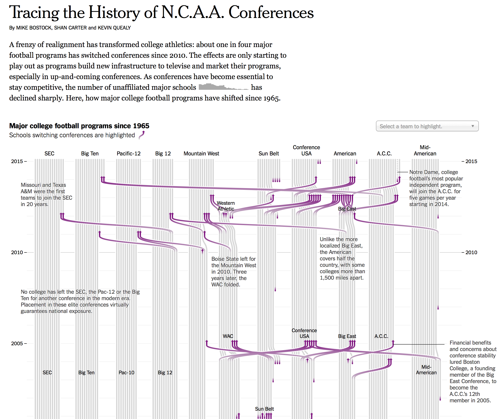
Edward Tufte
The father of information design. His books — The Visual Display of Quantitative Information, Envisioning Information, Beautiful Evidence — established the foundational principles: maximize the data-ink ratio, eliminate chartjunk, use sparklines for dense inline data. His critique of PowerPoint as a tool that corrupts thinking is directly relevant to why conversation needs better visual forms.
Author of Information is Beautiful and Knowledge is Beautiful. Runs the Information is Beautiful Awards, the most prominent annual data visualization competition. His work popularized data visualization for mainstream audiences and demonstrated that complex information can be made accessible and beautiful. His studio's infographics on topics from rhetoric to relationships show how human dynamics can be mapped visually.
Statistician and creator of FlowingData, one of the most influential data visualization blogs. His books Visualize This and Data Points provide practical guides to data visualization. Enormous library of visualization techniques — network graphs, temporal flows, multivariate displays — all directly applicable to conversation data. Updated regularly with new projects and tutorials.
Knight Chair in Visual Journalism at the University of Miami. Author of The Functional Art and The Truthful Art. Bridges aesthetics and statistics, arguing visualizations must be truthful and functional. His emphasis on ethical representation is crucial for conversation visualization — where misrepresenting dynamics could cause real harm.
The commercial landscape of tools that analyze meetings, sales calls, and negotiations from audio and transcripts. Most focus on metrics and coaching — the visual interfaces are utilitarian but the data pipelines are instructive.
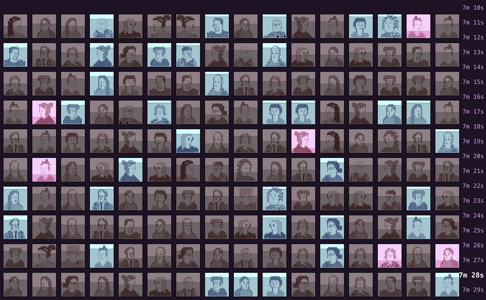
The Pudding — "30 Minutes with a Stranger"
Alvin Chang's 2025 interactive essay visualizes the emotional dynamics of conversations between strangers using the CANDOR corpus. ASCII art represents individuals, with a real-time progress marker tracking emotional arcs over 30 minutes. One of the most direct and beautiful examples of conversation visualization as narrative. Directly relevant.
Fathom built an NLP-powered exploration tool for 14 years of the On Being podcast archive. Reveals "strange adjacencies" and connections between conversations across thousands of hours of dialogue. A powerful example of making a massive conversational archive explorable and finding hidden patterns across dialogues. Directly relevant.
AI meeting assistant that goes beyond transcription to visualize speaker talk-time distribution, sentiment analysis, and topic tracking. Shows percentage breakdowns of who spoke when and the emotional tone of each segment. The most visually interesting of the commercial meeting tools for showing conversation dynamics rather than just text.
Conversation intelligence platform for sales teams. Records, transcribes, and analyzes customer calls with features like sentiment analysis, keyword spotting, and deal intelligence timelines. Visualizes key interactions across a deal lifecycle. Now part of ZoomInfo's revenue intelligence stack.
Argument Mapping — Debate and Persuasion Visualization
Tools and platforms that make the logical structure of arguments, debates, and persuasion visible. From structured debate platforms to academic argument mapping — the infrastructure for visualizing how people convince each other.
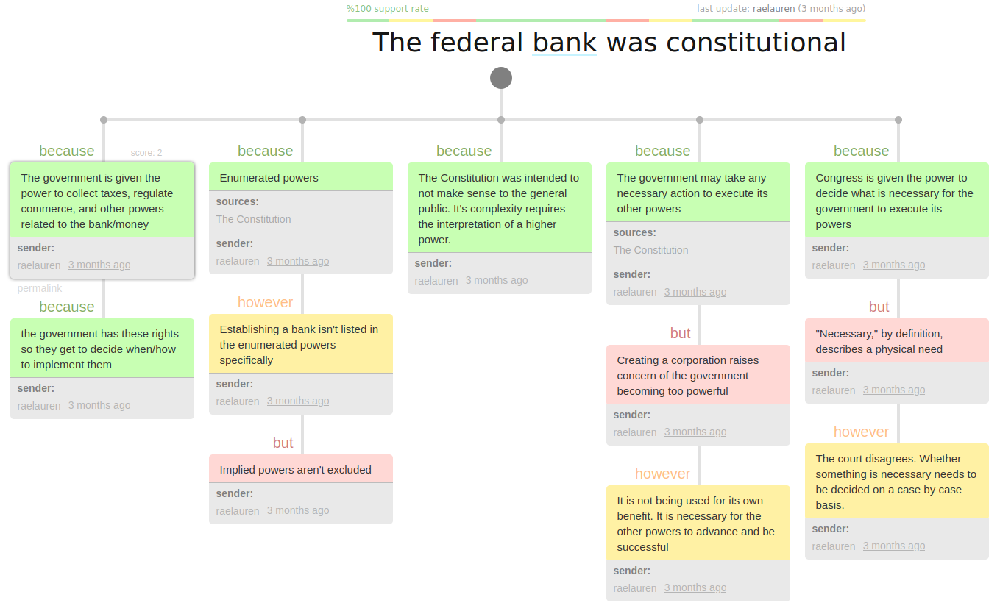
Kialo & Kialo Edu
A structured debate platform where arguments are organized as visual trees — claims branch into pro and con arguments, which branch further. Used in education and policy discussions. The clearest existing example of making argument structure navigable. The visual tree format maps directly to how persuasion flows in real conversations.
A Markdown-like syntax for creating argument maps. Write arguments in structured text and automatically generate visual graphs showing logical relationships. Lightweight, flexible, and open-source. Could be adapted to auto-generate argument maps from conversation transcripts.
A collaboration between Dario Taraborelli, Moritz Stefaner, and Giovanni Luca Ciampaglia that visualizes Wikipedia deletion discussions as organic, tree-like forms. Each branch represents a vote to keep or delete, creating beautiful organic shapes that reveal the dynamics of consensus and disagreement over time. Stunning visual precedent for conversation flow.
Martin Wattenberg and Fernanda Viégas created Phrase Net to diagram word relationships in text. It visualizes connections between words as constellation-like networks — showing which words appear near each other and how frequently. Directly applicable to conversation transcripts for revealing hidden patterns in how people use language together.
Web-based platform for visualizing and sharing networks of thought. Maps arguments and ideas as interconnected nodes in a navigable graph. Used for policy discussions, collaborative reasoning, and exploring complex debates. The visual network format reveals how ideas connect and influence each other.
A method for modeling and visualizing the structure of connections in coded discourse data. Developed at the University of Wisconsin-Madison. Shows how different concepts are connected within a conversation — which ideas co-occur, how argument structures evolve. Used in education research to analyze collaborative discourse. The network visualizations reveal hidden structure in how people think together.
Web-based text analysis and visualization environment. Generates word clouds, frequency graphs, concordances, and trend lines from any text input. The "Trends" graph can illustrate the flow of conversation and turn-taking dynamics. Free, open-source, and immediately usable with any transcript.
Nature Metaphors — Rivers, Weather, Stars, Organic Forms
Creators and tools that use natural phenomena as data visualization metaphors. Rivers for flow, weather for emotional atmosphere, constellations for idea clusters, organic growth for conversation evolution. These are the visual languages Fernwae will draw from.
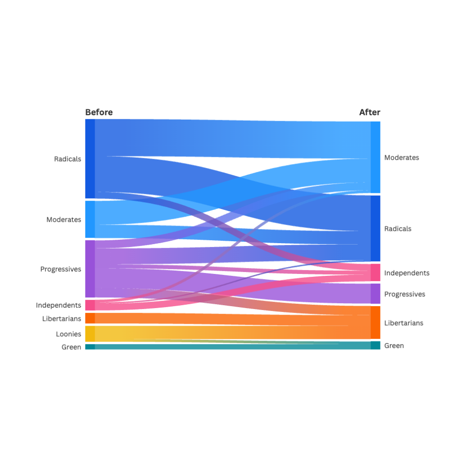
Flourish — Flow Visualizations
Powerful interactive visualization platform with beautiful Sankey diagrams, alluvial diagrams, and stream graphs. The river/flow metaphor is directly applicable to conversation flow — showing how topics branch, merge, and evolve over time. Stream graphs can represent the emotional current of a dialogue.
Data artist who makes data feel human and alive. His "tree.growth" project uses L-Systems to generate organic tree forms from data — simple rules creating complex, branching structures. This method could visualize the branching structure of a conversation, with different branches representing different conversational threads. Co-founded the Office for Creative Research. Emphasis on the human dimension of data.
Digital media artist whose "Flight Patterns" transformed FAA air traffic data into organic, flowing networks that look like a living nervous system. Demonstrates how to find hidden beauty and organic form in massive datasets. His approach to crowdsourced data art ("The Sheep Market", "The Johnny Cash Project") also suggests models for participatory conversation visualization.
Designer and researcher whose "Material Ecology" merges computational design, digital fabrication, and synthetic biology. Her "Totems" project uses melanin in 3D-printed structures that respond to light — living, responsive data forms. Suggests a model for conversation visualization that is alive and reactive, changing in response to the dynamics of the dialogue.
Japanese sound artist known for minimalist, immersive audiovisual installations. "datamatics" transforms raw data from genetics, astronomy, and mathematics into overwhelming visual and sonic experiences. Demonstrates that abstract data can become a powerful, embodied sensory experience — not just a chart on a screen.
Web-based platform for creating beautiful, interactive network visualizations and systems maps. Used for mapping complex systems, stakeholder relationships, and influence networks. The visual language of gravitational pull, clustering, and orbital relationships maps naturally to conversation dynamics — who influences whom, which ideas attract others.
Academic tools and research specifically designed to study, visualize, and improve meetings, group collaboration, and team dynamics. The closest existing research to what Fernwae is building.
Meeting Mediator — MIT Media Lab
Uses Sociometric Badges (wearable sensors by Sandy Pentland's group) to capture social signals in real-time — tone of voice, speaking patterns, physical proximity. Displays node-link diagrams on mobile phones showing dominance, participation balance, and influence patterns. Aims to promote behavioral change during meetings. The closest academic precedent to Fernwae's real-time meeting visualization.
An interactive meeting table developed at the Swiss Federal Institute of Technology in Lausanne. Embedded microphones monitor participation levels and display real-time feedback as reactive LED visualizations on the table's surface. The visualization changes to reflect conversation balance — making participation dynamics ambient and physical rather than screen-based.
Tracks who is speaking and for how long using speech recognition, then displays a real-time histogram showing relative speaking time of each participant. Simple but effective — makes the invisible dynamics of who dominates a conversation immediately visible to all participants.
MIT professor whose research on "honest signals" — unconscious social signals that predict outcomes of negotiations, job interviews, and business pitches — is foundational. His Sociometric Badges capture these signals (tone, activity, consistency, influence) and his book Honest Signals provides the theoretical framework for why conversation dynamics are predictable from non-verbal cues.
Foundational 2002 paper introducing "social visualization" — using graphical interfaces to reveal social patterns in online conversations. Presented Chat Circles and Loom, two systems that go beyond searchable text archives to create visual representations showing activity, participation, and topic evolution. The academic origin point for conversation visualization.
Visualizes threaded discussions (originally Usenet groups) showing participant roles and conversation flow. Reveals the structure of how discussions branch, who responds to whom, and which threads attract the most engagement. A precursor to modern conversation visualization — built by Judith Donath, Karrie Karahalios, and Fernanda Viégas.
Projects that transform human emotion, feeling, and lived experience into visual and interactive art. The aesthetic precedents for making the invisible emotional layer of conversation visible.
Emotion Visualization
Jonathan Harris — We Feel Fine
A landmark art project that harvests feelings from blog posts containing "I feel" or "I am feeling" and represents them as a swarm of colorful, interactive particles. Each particle's appearance reflects the nature of the emotion it represents. A dynamic, self-organizing particle system for the collective emotional landscape of the internet. Joshua loves the style.
2024 IIB Award winner. Analyzes the decline of love songs in Billboard Top 10 charts using interactive stacked area charts showing changing proportions of song themes over time. Demonstrates how to visualize changing sentiments in a large dataset of text — directly adaptable to conversational transcripts.
Analyzed 2,000 film screenplays to visualize dialogue breakdown by gender. Uses scrolling narrative to progressively reveal data. Directly analyzes and visualizes dialogue patterns and representation in conversations. A masterclass in making conversation data accessible.
Exceptional examples of data storytelling and visualization design that inform the visual language of the project. Not all are about conversation, but each demonstrates a principle worth stealing.
Explorable Explanations
Bret Victor — Explorable Explanations
The foundational essay advocating for active reading by transforming static text into interactive environments. Readers play with assumptions, explore concrete examples, and access contextual information in real-time. The intellectual foundation for making conversation transcripts interactive rather than passive.
Layered line graphs comparing weekly death counts across years, with color and clear annotations guiding interpretation. Demonstrates how to effectively communicate complex temporal trends through multiple, layered charts that tell a story and allow comparison across dimensions.
FlowingData — Years You Have Left to Live, Probably
Interactive simulation of possible lifespans based on age and sex. Each dot represents a possible lifetime. Turns an abstract statistic into a tangible, individualized experience. Demonstrates how to make data personal and thought-provoking.
Masterclass in visualizing temporal dynamics and momentum shifts. The design craft here is phenomenal: color gradients that encode intensity, geometric forms that make progression and reversal instantly legible, and animation that reveals the narrative arc of a sequence. The visual language — how she handles momentum, turning points, escalation, and resolution — translates directly to mapping conversation dynamics: energy shifts, topic escalation, agreement/disagreement arcs, and emotional momentum.
Annual awards recognizing the best in data visualization, infographics, and information art worldwide. A curated gallery of the state of the art in making data visible and beautiful. Browse winners for ongoing inspiration.
Juice Analytics — 20 Best Data Storytelling Examples
Curated collection of outstanding data storytelling examples including We Feel Fine, Gapminder, and other landmark projects. A useful reference index for design patterns in data narrative.